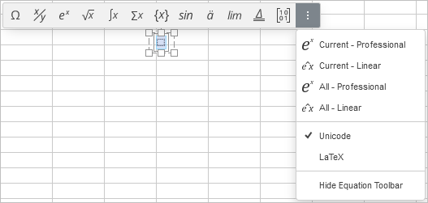

Umetanje jednačina
Spreadsheet Editor vam omogućava da kreirate jednačine koristeći ugrađene šablone, da ih uređujete, kao i da ubacujete specijalne karaktere (uključujući matematičke operatore, grčka slova, akcente itd.).
Dodavanje nove jednačine
Da biste umetnuli jednačinu iz galerije,
- postavite kursor u odgovarajuću ćeliju,
- prebacite se na karticu Insert na gornjoj traci sa alatkama,
- kliknite na strelicu pored ikone Equation na gornjoj traci sa alatkama,
-
izaberite potrebnu kategoriju jednačina na traci sa alatkama iznad umetnute jednačine,
ili
u otvorenoj padajućoj listi izaberite kategoriju jednačina koja vam je potrebna.
Sledeće kategorije su trenutno dostupne: Symbols, Fractions, Scripts, Radicals, Integrals, Large Operators, Brackets, Functions, Accents, Limits and Logarithms, Operators, Matrices,
- kliknite na simbol Equation Settings na traci sa alatkama iznad umetnute jednačine da pristupite dodatnim podešavanjima, npr. Unicode ili LaTeX, Professional ili Linear, kao i Change to Inline,
- kliknite na određeni simbol/jednačinu u odgovarajućem skupu šablona,
- da biste sakrili traku sa alatkama, kliknite na opciju Hide Equation Toolbar u Equation Settings.

Izabrani simbol/jednačina biće dodat(a) na radni list.
Gornji levi ugao okvira jednačine poklapaće se sa gornjim levim uglom trenutno izabrane ćelije, ali okvir jednačine može se slobodno pomerati, menjati mu se veličina ili rotirati na listu. Da biste to uradili, kliknite na ivicu okvira jednačine (biće prikazana kao puna linija) i koristite odgovarajuće ručke.
Svaki šablon jednačine predstavlja skup polja. Polje je pozicija svakog elementa koji čini jednačinu. Prazno polje (poznato i kao placeholder) ima isprekidani okvir . Potrebno je da popunite sva prazna polja navodeći potrebne vrednosti.
Unos vrednosti
Tačka umetanja određuje gde će se pojaviti sledeći znak. Da biste precizno postavili tačku umetanja, kliknite unutar placeholder-a i koristite strelice na tastaturi da pomerite tačku umetanja za jedan znak ulevo/udesno.
Kada je tačka umetanja postavljena, možete popuniti placeholder:
- unesite željenu brojčanu/literalnu vrednost koristeći tastaturu,
- ubacite specijalni karakter koristeći paletu Symbols iz menija Equation na kartici Insert gornje trake sa alatkama ili tako što ćete ga otkucati na tastaturi (pogledajte opis opcije Math AutoСorrect),
- dodajte još jedan šablon jednačine iz palete da biste kreirali složenu ugnježdenu jednačinu. Veličina primarne jednačine automatski će se prilagoditi njenom sadržaju. Veličina elemenata ugnježdene jednačine zavisi od veličine placeholder-a primarne jednačine, ali ne može biti manja od veličine sub-subscript-a.
Da biste dodali nove elemente jednačine, možete koristiti i opcije iz menija na desni klik:
- Da biste dodali novi argument koji ide pre ili posle postojećeg unutar Brackets, možete desnim klikom na postojeći argument izabrati opciju Insert argument before/after.
- Da biste dodali novu jednačinu unutar Cases sa više uslova iz grupe Brackets, možete desnim klikom na prazan placeholder ili već unetu jednačinu unutar njega izabrati opciju Insert equation before/after.
- Da biste dodali novi red ili kolonu u Matrix, možete desnim klikom na placeholder u okviru matrice izabrati opciju Insert, zatim Row Above/Below ili Column Left/Right.
Napomena: trenutno nije moguće unositi jednačine koristeći linearni format, tj. \sqrt(4&x^3).
Prilikom unosa vrednosti matematičkih izraza nije potrebno koristiti Spacebar jer se razmaci između znakova i operatora automatski postavljaju.
Ako je jednačina predugačka i ne staje u jedan red unutar okvira jednačine, automatsko prelamanje reda će se desiti tokom kucanja. Takođe možete umetnuti prelom reda na tačno određenom mestu tako što ćete desnim klikom na matematički operator izabrati opciju Insert manual break. Izabrani operator će započeti novi red. Da biste obrisali ručno dodat prelom reda, desnim klikom na matematički operator koji započinje novi red izaberite opciju Delete manual break.
Formatiranje jednačina
Podrazumevano, jednačina unutar okvira jednačine je horizontalno centrirana i vertikalno poravnata na vrh okvira jednačine. Da biste promenili horizontalno/vertikalno poravnanje, postavite kursor u okvir jednačine (ivice okvira biće prikazane isprekidanim linijama) i koristite odgovarajuće ikonice na gornjoj traci sa alatkama.
Da biste povećali ili smanjili veličinu fonta u jednačini, kliknite bilo gde unutar okvira jednačine i koristite dugmad Increment font size
i Decrement font size na kartici Home gornje trake sa alatkama ili izaberite željenu veličinu fonta sa liste. Svi elementi jednačine će se promeniti u skladu s tim.Slova u jednačini su podrazumevano u kurzivu. Po potrebi, možete promeniti stil fonta (bold, italic, strikeout) ili boju za celu jednačinu ili njen deo. Stil underlined može se primeniti samo na celu jednačinu, ne i na pojedinačne znakove. Izaberite željeni deo jednačine klikom i prevlačenjem. Izabrani deo biće obojen plavo. Zatim koristite odgovarajuća dugmad na kartici Home gornje trake sa alatkama da formatirate izbor. Na primer, možete ukloniti kurziv za obične reči koje nisu promenljive ili konstante.
Za izmene pojedinih elemenata jednačine možete koristiti i opcije iz menija na desni klik:
- Da biste promenili format Fractions, možete desnim klikom na razlomak izabrati opciju Change to skewed/linear/stacked fraction (dostupne opcije zavise od tipa razlomka).
- Da biste promenili poziciju Scripts u odnosu na tekst, možete desnim klikom na jednačinu koja sadrži scripts izabrati opciju Scripts before/after text.
- Da biste promenili veličinu argumenta za Scripts, Radicals, Integrals, Large Operators, Limits and Logarithms, Operators, kao i za overbraces/underbraces i šablone sa grupišućim znakovima iz grupe Accents, možete desnim klikom na argument koji želite da promenite izabrati opciju Increase/Decrease argument size.
- Da biste odredili da li treba prikazivati prazno polje za stepen u okviru Radical, možete desnim klikom na radical izabrati opciju Hide/Show degree.
- Da biste odredili da li treba prikazivati prazna polja limita za Integral ili Large Operator, možete desnim klikom na jednačinu izabrati opciju Hide/Show top/bottom limit.
- Da biste promenili položaj limita u odnosu na znak integrala ili operatora za Integrals ili Large Operators, možete desnim klikom na jednačinu izabrati opciju Change limits location. Limiti mogu biti prikazani desno od znaka operatora (kao subscript i superscript) ili direktno iznad i ispod znaka operatora.
- Da biste promenili položaj limita u odnosu na tekst za Limits and Logarithms i šablone sa grupišućim znakovima iz grupe Accents, možete desnim klikom na jednačinu izabrati opciju Limit over/under text.
- Da biste izabrali koje Brackets će biti prikazane, možete desnim klikom na izraz unutar njih izabrati opciju Hide/Show opening/closing bracket.
- Da biste kontrolisali veličinu Brackets, možete desnim klikom na izraz unutar njih. Opcija Stretch brackets je podrazumevano uključena kako bi se zagrade povećavale prema izrazu unutar njih, ali je možete isključiti da sprečite rastezanje. Kada je ova opcija aktivna, možete koristiti i opciju Match brackets to argument height.
- Da biste promenili položaj karaktera u odnosu na tekst za overbraces/underbraces ili overbars/underbars iz grupe Accents, možete desnim klikom na šablon izabrati opciju Char/Bar over/under text.
- Da biste izabrali koje ivice treba prikazati za Boxed formula iz grupe Accents, možete desnim klikom na jednačinu izabrati opciju Border properties, zatim izabrati Hide/Show top/bottom/left/right border ili Add/Hide horizontal/vertical/diagonal line.
- Da biste odredili da li se prazna polja treba prikazivati u Matrix, možete desnim klikom na matricu izabrati opciju Hide/Show placeholder.
Za poravnanje pojedinih elemenata jednačine možete koristiti i opcije iz menija na desni klik:
- Da biste poravnali jednačine unutar Cases sa više uslova iz grupe Brackets, možete desnim klikom na jednačinu izabrati opciju Alignment, zatim tip poravnanja: Top, Center ili Bottom.
- Da biste vertikalno poravnali Matrix, možete desnim klikom na matricu izabrati opciju Matrix Alignment, zatim tip poravnanja: Top, Center ili Bottom.
- Da biste horizontalno poravnali elemente unutar kolone Matrix, možete desnim klikom na placeholder u toj koloni izabrati opciju Column Alignment, zatim tip poravnanja: Left, Center ili Right.
Brisanje elemenata jednačine
Da biste obrisali deo jednačine, izaberite deo koji želite da obrišete prevlačenjem miša ili tako što držite taster Shift i koristite strelice, zatim pritisnite taster Delete na tastaturi.
Polje (slot) može biti obrisano samo zajedno sa šablonom kojem pripada.
Da biste obrisali celu jednačinu, kliknite na ivicu okvira jednačine (biće prikazana kao puna linija) i pritisnite taster Delete na tastaturi.
Neke elemente jednačine možete obrisati i pomoću opcija iz menija na desni klik:
- Da biste obrisali Radical, možete desnim klikom na njega izabrati opciju Delete radical.
- Da biste obrisali Subscript i/ili Superscript, možete desnim klikom na izraz koji ih sadrži izabrati opciju Remove subscript/superscript. Ako izraz sadrži scripts koji idu pre teksta, dostupna je opcija Remove scripts.
- Da biste obrisali Brackets, možete desnim klikom na izraz unutar njih izabrati opciju Delete enclosing characters ili Delete enclosing characters and separators.
- Ako izraz unutar Brackets sadrži više od jednog argumenta, možete desnim klikom na argument koji želite da obrišete izabrati opciju Delete argument.
- Ako Brackets sadrže više od jedne jednačine (tj. Cases sa više uslova), možete desnim klikom na jednačinu koju želite da obrišete izabrati opciju Delete equation.
- Da biste obrisali Limit, možete desnim klikom na njega izabrati opciju Remove limit.
- Da biste obrisali Accent, možete desnim klikom na njega izabrati opciju Remove accent character, Delete char ili Remove bar (dostupne opcije zavise od izabranog akcenta).
- Da biste obrisali red ili kolonu u Matrix, možete desnim klikom na placeholder unutar reda/kolone koju želite da obrišete izabrati opciju Delete, zatim Delete Row/Column.
Konvertovanje jednačina
Ako otvorite postojeći dokument koji sadrži jednačine kreirane starom verzijom editora jednačina (na primer, u MS Office verzijama pre 2007), potrebno je da te jednačine konvertujete u Office Math ML format kako biste mogli da ih uređujete.
Da biste konvertovali jednačinu, dvaput kliknite na nju. Pojaviće se prozor sa upozorenjem:

Da biste konvertovali samo izabranu jednačinu, kliknite na dugme Yes u prozoru sa upozorenjem. Da biste konvertovali sve jednačine u ovom dokumentu, označite polje Apply to all equations i kliknite Yes.
Kada je jednačina konvertovana, možete je uređivati.